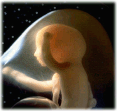

Niño
 De: La Frikipedia, la enciclopedia extremadamente seria.
De: La Frikipedia, la enciclopedia extremadamente seria.
«Un niño es la belleza con la cara sucia, el instinto con su pié sobre el cuello de un amigo, la sabiduría con el chicle en el pelo y la esperanza del futuro con una rana en el culo»
~ Lala, el teletubbie magenta sobre los niños
«Los niños son de diferentes medidas, pesos y colores, pero todos tienen el mismo credo: joder cada segundo de vida de los seres que pueblan su hábitat. Cada segundo, cada minuto, cada hora, de cada día....cuando el último minuto se termina y sus progenitores los meten en la cama, llorando, con la boca llena de espuma y los ojos inyectados en sangre...entonces empieza la función en el mundo de los Sueños»
~ Nota a los piés de un ahorcado
 Niño en estado larvario, tambien llamado feto o burto "¡Hijos de Puta, sacadme de aquí! ¡Quiero mi bocadillo!"....Pronto empezará su adoctrinamiento para que una vez abandonado el estado de larva sea capaz de mandar SMSs a A tu lado
Un niño es un ser humano macho, desde que sale del coño de una puta, hasta que se mete en el de otra.
¿Qué no es?

Espécimen de Niño
- No es una bendicion de dios es un castigo del mismo
- No es gracioso a no ser que se meta una hostia y sangre por la nariz.
- No es ningun tipo de montura
- No es inteligente, exceptuando el caso de los niños del programa "No soy mas listo que un niño de primaria" esos son enanos superdotas embutidos en trajes de licra.
- No es un hombre, si es capaz de llorar con la muerte de la madre de Bambi no es ni persona.
- No es un saco de boxeo al contrario que este, un niño se rompe y rara vez se arregla cosiendolo.
- No confundir con niña , siendo este ser y los propios niños, sus peores enemigos.
- No es inmortal.
- No es mas listo que un mochuelo.
- No es tu madre
¿Qué es?
- Un niño es un agente infeccioso y parasitario, que depende completamente de la letra Ñ para existir.
- Es de tamaño pequeño-mediano o de dos metros parriba.
- Es el inventor de todos los insultos que ha conocido la humanidad
- Es un ser impotente.
- Es el ojito derecho de la mami y el izquierdo del pervertido conserje del colegio.
- Es un adicto a todo tipo de sustancias incluyendo el barro.
- Es algo mullidito objeto detorturas como resultado de mera diversión.
- Es esa criatura capaz de robar bancos y poder salir impune si le atrapan(si el solitario hubiera sido un niño ahora estaría en libertad).
- Es aquel ser capaz de entender los capitulos de los teletubis sin llegar a la conclusion de que son homosexuales.
- Es tambien un gran estratega y con unas grandes dotes para la batalla capaz de acabar anímicamente con una persona.
- El juguete preferido de Michael jackson
- Es un mal trasmitido por medio del sexo
- Es una ametralladora de mierda(solo superada por medio planeta)
Hábitos y conductas
- Habla solo, sin importar quien pueda escucharles, ni la interpretación que pueda hacerse de sus palabras.
- Suelen experimentar nutricional y bichos varios, charcos, gomas, lápices, tizas (siendo esta a veces incluso esnifada), cualquier tipo de materia que se pueda lamer, etc.
- Cada niño tiene su teoría sobre su propia existencia (sususú valga la rebuznancia), unos creen que vienen del mono (al que llaman papá o el que se cepilla a mi madre), otros más inteligentes creen que proceden del interior de las hembras humanas siendo esta la teoría mas popular; pero muy variable en cuanto a como son introducidos en tal lugar. Unos sostienen que el humano macho y la hembra humana se unen mediante los característicos pezones prensiles humanos, creando un conducto pezonial por el cual, se intercambian las diferentes parte del cuerpo del niño, ojos, nariz, patas, pezuñas antenas y un melón (futura cabeza). Otros mas escépticos se descojonan ante la anterior teoría, creyendo que proceden de la acción separatista de las rodillas femeninas del humano hembra y la carboná del pene (macho humano) compuesto por un 93% de salchichonio y un 7% de Nada.
Niño Inteligente (un futuro Genio)
- Seres calculadores como son los niños. en ocasiones saben la importancia de reunirse en grupo y asi poder unir fuerzas con las que acabar con los adultos.Uno de sus grandes centros de reunion en cierta época fue el plató de megatrix desde el cual reunian a más de los suyos y lanzaban propaganda de sus actos.
- Estos enanos cabrones resultan un gran peligro si se reunen más de una persona.
- En la playa:
- En estos ambientes el niño es donde muestra las mayores de sus facultades.Un niño en la playa puede pasarse una tarde entera construyendo un prototipo de rompeolas hecho de arena el cual sabe perfectamente que cuando la marea suba sera destruido, esto no es mas que una de sus estrategias para poder conseguir un helado gratis, sabiendo que la mayor de las debilidades del adulto es ver a un niño llorando.
- Un niño en la playa es un arma de doble filo es capaz de destrozarte física y mentalmente haciendo levantar arena y que te tragues una media de metro cúbico de arena (saben muy bien que eso te destroza por dentro poco a poco).
Advertencias para un buen funcionamiento

Niño al que pillan viendo porno
A diferencia de lo que muchos piensan, el niño no es invulnerable a la ácido sulfúrico o a las altas temperaturas. Atención: si usted desea que su niño dure mas tiempo no lo exponga a ninguno de los elementos anteriormente mencionados ni lo acerque a extraños o abismos, pues tienden a saltar hacia ellos. Lavar a mano, nunca en lavadora, y usar detergente extra fuerte en axilas y entrepierna, mantener en lugar oscuro y fresco, alejado del sol, excepto una o dos horas al día para evitar que se decolore, necesita comer una o dos veces al día, una dosis de media hora de amor y tener acceso a un baño y a educación para que no se vuelva tonto.
Ver tan vién
Autor(es):
- Krusher
- Nexo
- Manchado
- Aque
- Alex2610
- Azulejos
- Politax
- El Sevillano
- Frikih
- NRikee
Frikipedia 2005-2016, Licencia
GFDL 1.2 - Extraído por FrikiLeaks